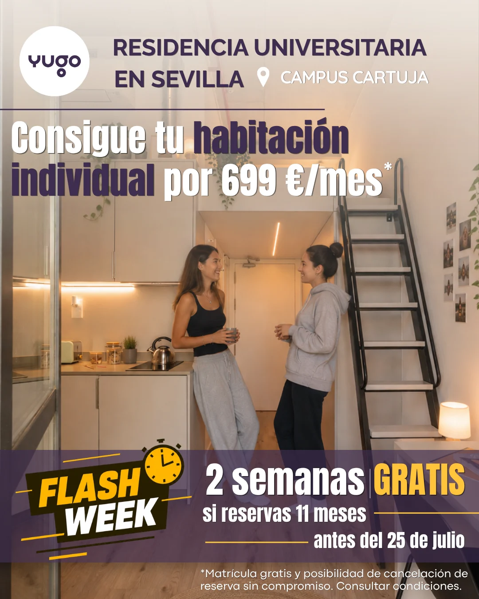
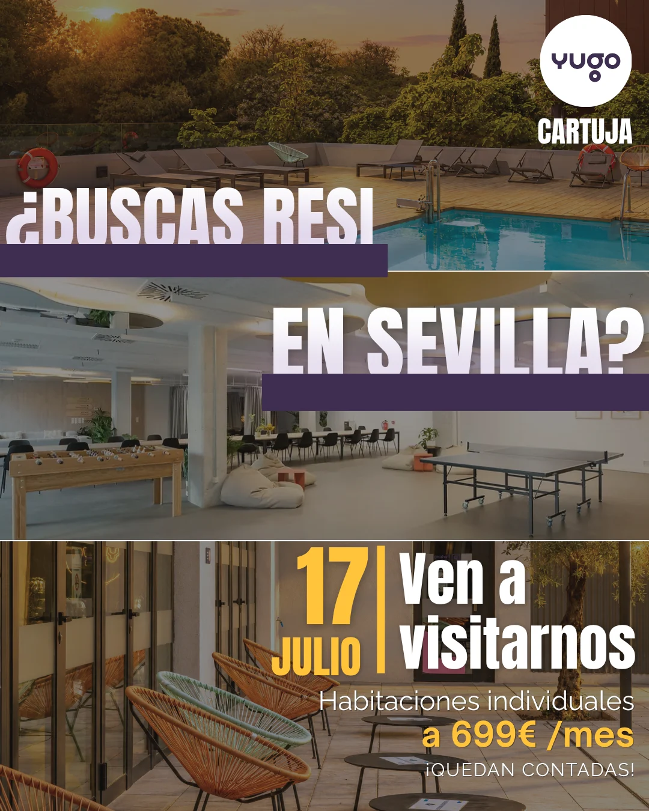
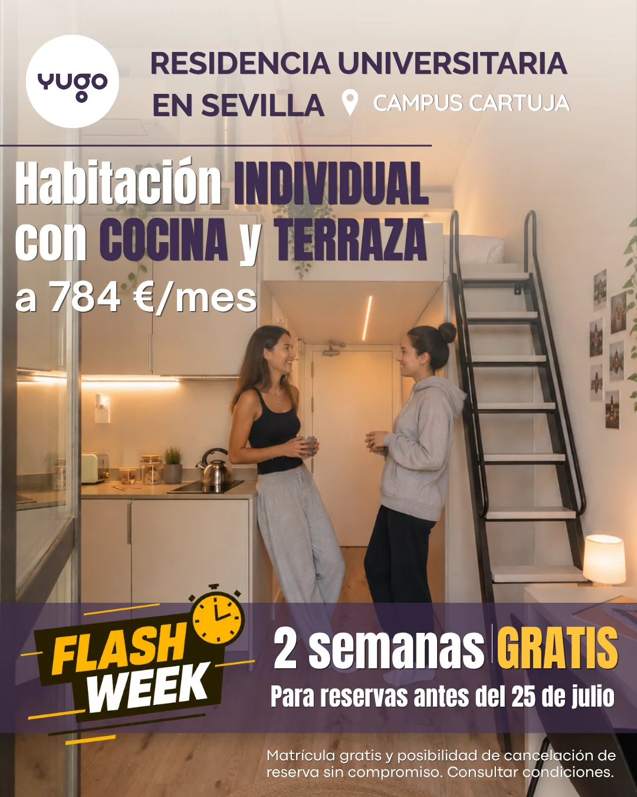
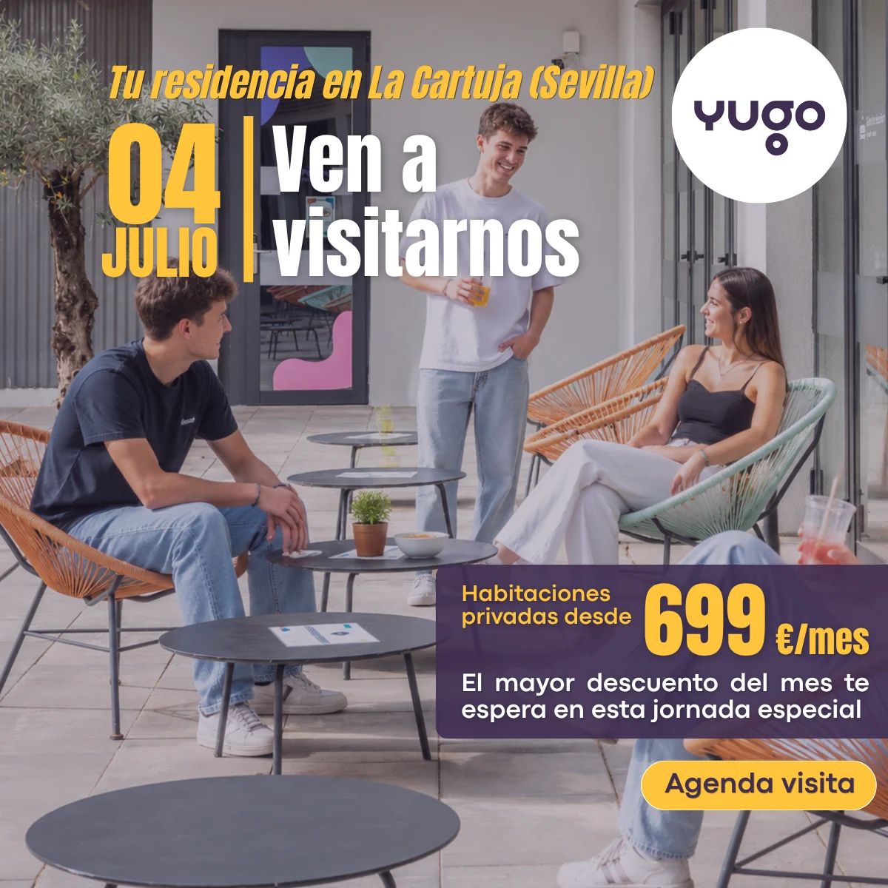
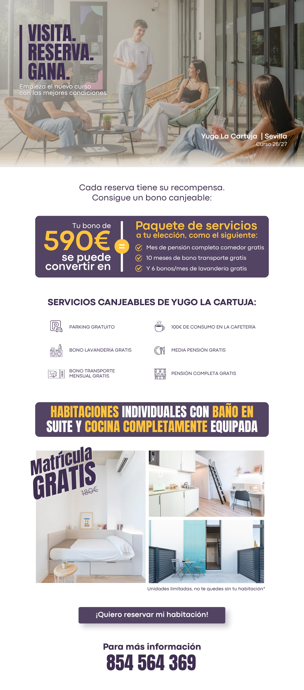
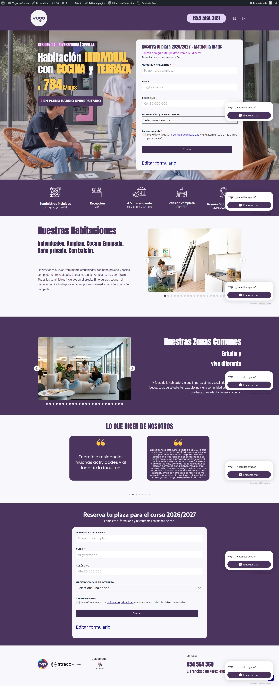

Yugo La Cartuja
Campaña de paid media en Google Ads y Meta para una residencia universitaria en Sevilla: landing, creatividades por oleada, vídeo y email.
Paid media campaign on Google Ads and Meta for a student residence in Seville: landing page, creatives for each wave, video and email.



- Sector
- Alojamiento universitario · residenciaStudent housing · residence
- UbicaciónLocation
- La Cartuja, SevillaLa Cartuja, Seville
- AñoYear
- 2026 · junio–julio2026 · June–July
- Mi rolMy role
- Campaña 360: landing, creatividades, vídeo y email.360 campaign: landing page, creatives, video and email.
- HerramientasTools
- Illustrator · Photoshop · Canva · WordPress · Google Ads · Meta Ads
01El retoThe challenge
Ocupar plazas durante todo el curso sin depender de un único pico de campaña. Yugo La Cartuja necesitaba presencia constante en Google Ads y Meta, con ofertas que cambiaran según el momento —promoción de junio, Flash Week, jornadas de puertas abiertas— sin perder tracción entre una y otra.Fill rooms all year without relying on a single campaign peak. Yugo La Cartuja needed a steady presence on Google Ads and Meta, with offers that shifted with the calendar —the June promotion, Flash Week, open days— without losing momentum in between.
02ProcesoProcess
- Muchas campañas pequeñasLots of small campaigns
Más que una campaña, fueron mini-campañas casi semanales dentro de un mismo reto de dos meses: cada promoción traía su propia tanda de creatividades.More than a single campaign, this was a string of near-weekly mini-campaigns inside one two-month push: every promotion brought its own batch of creatives.
- La landing cambiaba con cada promociónThe landing changed with every promotion
Junio, puertas abiertas y Flash Week: la página se actualizaba junto con las creatividades, para que el clic no rompiera la expectativa.June, open days and Flash Week: the page was updated along with the creatives, so the click never broke expectations.
- Del anuncio al leadFrom ad to lead
Vídeos verticales para Meta y TikTok y un email de seguimiento, “Visita, reserva, gana”, para no perder a quien dejaba sus datos.Vertical video for Meta and TikTok and a follow-up email, “Visit, book, win”, so nobody who left their details was lost.
03SoluciónSolution
Creatividades por oleada —promoción de junio, puertas abiertas y Flash Week—, dos vídeos verticales y un email de seguimiento, todo conectado a una landing que se actualizaba con cada promoción.Creatives for each wave —June promotion, open days and Flash Week—, two vertical videos and a follow-up email, all connected to a landing page that was updated with every promotion.



La landing ya no está online. Con cada promoción de la campaña —junio, puertas abiertas, Flash Week— se actualizaba junto con las creatividades.The landing page is no longer online. With every promotion in the campaign —June, open days, Flash Week— it was updated along with the creatives.